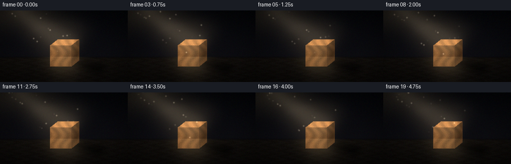

CODING AGENTS AS PIXEL WORLD MODELS
traex/Seed-2.1-Pro-0915 · phygen_041
点击播放 · 原生 RGB 像素
逐轮保存的候选
回放视频、检查图与代码变化。
每份候选均可单独播放。实际图片检查记录在下方工具轨迹中。
候选 01播放与检查图
点击播放 · 原生 RGB 像素

展开代码变化
--- 上一保存版本
+++ 本次保存版本
@@ -0,0 +1,223 @@
+"""Text-to-video generation: a diagonal light ray on a wooden block in the dark.
+
+Pure numpy/PIL renderer. Produces 20 RGB frames (256x144, 4 fps) and saves them
+through artifact_io.save, as required by the PixelWorld generation contract.
+"""
+import json
+from pathlib import Path
+
+import numpy as np
+from PIL import Image, ImageDraw, ImageFilter
+
+import artifact_io
+
+CASE_DIR = Path(__file__).resolve().parent
+W, H = 256, 144
+N_FRAMES, FPS = 20, 4.0
+
+rng = np.random.default_rng(41)
+
+# ---------------------------------------------------------------- geometry
+# Wooden cube (front face + top face + right face), sitting on the ground.
+FX0, FY0, FX1, FY1 = 100, 70, 143, 112 # front face rectangle
+DX, DY = 15, -12 # depth offset (up-right)
+HORIZON = 94 # ground starts here
+
+FRONT = [(FX0, FY0), (FX1, FY0), (FX1, FY1), (FX0, FY1)]
+TOP = [(FX0, FY0), (FX1, FY0), (FX1 + DX, FY0 + DY), (FX0 + DX, FY0 + DY)]
+RIGHT = [(FX1, FY0), (FX1 + DX, FY0 + DY), (FX1 + DX, FY1 + DY), (FX1, FY1)]
+CUBE_POLYS = [FRONT, TOP, RIGHT]
+
+# Light beam: a cone from the upper-left corner landing on the block.
+BEAM_SRC = np.array([-28.0, -42.0])
+BEAM_TARGET = np.array([128.0, 64.0])
+AXIS = BEAM_TARGET - BEAM_SRC
+AXIS_LEN = np.linalg.norm(AXIS)
+AXIS_N = AXIS / AXIS_LEN
+PERP = np.array([-AXIS_N[1], AXIS_N[0]])
+BEAM_HALF_WIDTH = 46.0
+
+
+def polygon_mask(points, blur=0.0):
+ img = Image.new("L", (W, H), 0)
+ ImageDraw.Draw(img).polygon([(float(x), float(y)) for x, y in points], fill=255)
+ if blur:
+ img = img.filter(ImageFilter.GaussianBlur(blur))
+ return np.asarray(img, dtype=np.float32) / 255.0
+
+
+def radial_mask(cx, cy, radius, blur=0.0):
+ yy, xx = np.mgrid[0:H, 0:W]
+ m = np.clip(1.0 - np.hypot(xx - cx, yy - cy) / radius, 0.0, 1.0) ** 2
+ if blur:
+ m = np.asarray(
+ Image.fromarray((m * 255).astype(np.uint8)).filter(
+ ImageFilter.GaussianBlur(blur)
+ ),
+ dtype=np.float32,
+ ) / 255.0
+ return m
+
+
+# ---------------------------------------------------------------- static base
+def build_base():
+ yy, xx = np.mgrid[0:H, 0:W].astype(np.float32)
+
+ # Dark back wall: faint vertical gradient, almost black.
+ wall_t = np.clip(yy / HORIZON, 0, 1)
+ wall = np.zeros((H, W, 3), np.float32)
+ wall[..., 0] = 5 + 7 * wall_t
+ wall[..., 1] = 6 + 6 * wall_t
+ wall[..., 2] = 9 + 7 * wall_t
+
+ # Ground plane: dark, slightly warm, subtle perspective texture.
+ ground_t = np.clip((yy - HORIZON) / (H - HORIZON), 0, 1)
+ ground = np.zeros((H, W, 3), np.float32)
+ ground[..., 0] = 17 - 5 * ground_t
+ ground[..., 1] = 14 - 4 * ground_t
+ ground[..., 2] = 11 - 3 * ground_t
+ plank = 1.6 * np.sin(xx * 0.18 + 2.0 * np.sin(yy * 0.55))
+ floor_noise = rng.normal(0, 1.1, (H, W))
+ ground += (plank + floor_noise)[..., None] * (ground_t[..., None] > 0)
+
+ base = np.where((yy >= HORIZON)[..., None], ground, wall)
+
+ # Soft horizon seam.
+ seam = np.exp(-((yy - HORIZON) ** 2) / 4.0)[..., None]
+ base = base * (1 - 0.5 * seam) + np.array([3.0, 3.0, 4.0]) * seam
+
+ # Wood grain texture, evaluated once over the whole image.
+ grain = 0.5 + 0.5 * np.sin(xx * 0.34 + 2.6 * np.sin(yy * 0.13)
+ + 1.4 * np.sin(yy * 0.047))
+ fine = rng.normal(0, 1.0, (H, W))
+ wood_mul = (0.80 + 0.24 * grain + 0.04 * fine)[..., None]
+ wood_base = np.array([148.0, 94.0, 49.0]) * wood_mul
+ return base, wood_base
+
+
+BASE, WOOD = build_base()
+
+FACE_MASKS = {
+ "front": polygon_mask(FRONT),
+ "top": polygon_mask(TOP),
+ "right": polygon_mask(RIGHT),
+}
+
+# Cast shadow on the ground (light comes from upper-left -> shadow down-right).
+SHADOW_POLY = [(138, 109), (158, 99), (216, 111), (197, 126)]
+SHADOW_MASK = polygon_mask(SHADOW_POLY, blur=5.0)
+CONTACT_MASK = radial_mask(129, 113, 30, blur=3.5)
+CONTACT_MASK *= (np.mgrid[0:H, 0:W][0] >= HORIZON - 2)
+
+# Beam masks (wide soft cone + brighter core).
+def beam_polygon(half_width):
+ far = 1.12
+ center_far = BEAM_SRC + AXIS_N * (AXIS_LEN * far)
+ return [
+ tuple(BEAM_SRC),
+ tuple(center_far + PERP * half_width * far),
+ tuple(center_far - PERP * half_width * far),
+ ]
+
+
+BEAM_WIDE = polygon_mask(beam_polygon(BEAM_HALF_WIDTH), blur=16.0)
+BEAM_CORE = polygon_mask(beam_polygon(BEAM_HALF_WIDTH * 0.45), blur=8.0)
+ENTRY_GLOW = radial_mask(6, 4, 70, blur=12.0)
+GROUND_POOL = radial_mask(132, 106, 62, blur=9.0)
+GROUND_POOL *= (np.mgrid[0:H, 0:W][0] >= HORIZON - 1)
+
+# Vignette (static).
+_y, _x = np.mgrid[0:H, 0:W].astype(np.float32)
+_d = np.hypot((_x - W / 2) / W, (_y - H / 2) / H)
+VIGNETTE = np.clip(1.0 - 0.55 * np.clip((_d - 0.32) / 0.42, 0, 1), 0.45, 1.0)[..., None]
+
+# Dust motes living inside the beam.
+N_DUST = 30
+dust_u = rng.uniform(0.08, 1.05, N_DUST)
+dust_v = rng.uniform(-0.9, 0.9, N_DUST)
+dust_phase = rng.uniform(0, 2 * np.pi, N_DUST)
+dust_speed = rng.uniform(0.0035, 0.009, N_DUST)
+dust_twinkle = rng.uniform(0.9, 1.8, N_DUST)
+
+
+def dust_layer(frame):
+ layer = Image.new("L", (W, H), 0)
+ draw = ImageDraw.Draw(layer)
+ for i in range(N_DUST):
+ u = (dust_u[i] + frame * dust_speed[i]) % 1.06 + 0.02
+ hw = BEAM_HALF_WIDTH * u
+ pos = BEAM_SRC + AXIS_N * (AXIS_LEN * u) + PERP * (dust_v[i] * hw)
+ x, y = float(pos[0]), float(pos[1])
+ if -4 < x < W + 4 and -4 < y < H + 4:
+ tw = 0.5 + 0.5 * np.sin(dust_phase[i] + frame * dust_twinkle[i])
+ r = 1.0 if tw > 0.45 else 0.7
+ a = int(120 * tw)
+ draw.ellipse((x - r, y - r, x + r, y + r), fill=a)
+ return np.asarray(layer.filter(ImageFilter.GaussianBlur(0.8)),
+ dtype=np.float32) / 255.0
+
+
+def render_frame(frame):
+ t = frame / FPS
+ flicker = (0.93
+ + 0.05 * np.sin(2 * np.pi * t / 1.75)
+ + 0.03 * np.sin(2 * np.pi * t / 0.83 + 1.3)
+ + rng.normal(0, 0.012))
+ flicker = float(np.clip(flicker, 0.82, 1.06))
+
+ img = BASE.copy()
+ yy, xx = np.mgrid[0:H, 0:W].astype(np.float32)
+
+ # --- shadows darken the ground first (block is drawn on top) ---
+ shadow_strength = np.clip(1.08 - 0.12 * flicker, 0.9, 1.0)
+ img *= (1 - 0.62 * SHADOW_MASK * shadow_strength)[..., None]
+ img *= (1 - 0.55 * CONTACT_MASK)[..., None]
+
+ # --- wooden block ---
+ edge = max(FX1 - FX0, 1)
+ front_gradient = (0.70 + 0.20 * (1 - (xx - FX0) / edge))[..., None]
+ faces = [
+ ("front", front_gradient * (0.78 + 0.10 * flicker)),
+ ("top", np.full((H, W, 1), 1.02 + 0.16 * flicker, np.float32)),
+ ("right", np.full((H, W, 1), 0.42 + 0.05 * flicker, np.float32)),
+ ]
+ for name, shade in faces:
+ m = FACE_MASKS[name][..., None]
+ img = img * (1 - m) + WOOD * shade * m
+
+ # Crisp cube edges so the block reads clearly in the dark.
+ edge_layer = Image.new("L", (W, H), 0)
+ ed = ImageDraw.Draw(edge_layer)
+ for poly in CUBE_POLYS:
+ ed.line(poly + [poly[0]], fill=200, width=1)
+ edge_m = (np.asarray(edge_layer, np.float32) / 255.0)[..., None]
+ img = img * (1 - 0.55 * edge_m) + np.array([38.0, 24.0, 14.0]) * edge_m
+
+ # Warm light pool where the ray meets the ground beside/behind the shadow.
+ warm = np.array([255.0, 214.0, 150.0])
+ img += warm * (GROUND_POOL * 0.20 * flicker)[..., None]
+
+ # --- volumetric diagonal beam, additive ---
+ img += warm * (BEAM_WIDE * 0.135 * flicker)[..., None]
+ img += np.array([255.0, 232.0, 190.0]) * (BEAM_CORE * 0.10 * flicker)[..., None]
+ img += warm * (ENTRY_GLOW * 0.16 * flicker)[..., None]
+
+ # --- floating dust inside the ray ---
+ dm = dust_layer(frame)[..., None]
+ img += np.array([255.0, 236.0, 200.0]) * dm * (0.55 + 0.45 * flicker)
+
+ # Vignette + faint film grain, then clip.
+ img *= VIGNETTE
+ img += rng.normal(0, 1.6, img.shape)
+ return np.clip(img, 0, 255).astype(np.uint8)
+
+
+def main():
+ spec = json.loads((CASE_DIR / "task_spec.json").read_text())
+ frames = np.stack([render_frame(i) for i in range(spec["frames"])], axis=0)
+ artifact_io.save(frames, CASE_DIR)
+ print(f"Saved {frames.shape} frames to {CASE_DIR}")
+
+
+if __name__ == "__main__":
+ main()
候选 02播放与检查图

可观测工具轨迹
实际执行的命令与返回图片。
命令 1exit 0
/bin/bash -lc 'cat prompt.txt; echo ---; cat GENERATION_RULES.md; echo ---; cat task_spec.json; echo ---; ls -la'
命令 2exit 0
/bin/bash -lc 'cat artifact_io.py'
命令 3exit 0
/bin/bash -lc 'cd . && python generate.py && ls -la'
保存候选 2 份；完成命令 3 次；可验证图片返回 0 张。原始 API 响应与完整日志保留在本地。